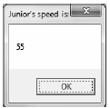

Now that you’ve taken a tour of the syntax and semantics of raw CIL, it’s time to solidify your current understanding by building a .NET application using nothing but ilasm.exe and your text editor of choice. Specifically, your application will consist of a privately deployed, single-file *.dll that contains two class type definitions, and a console-based *.exe that interacts with these types.
The first order of business is to build the *.dll to be consumed by the client. Open a text editor and create a new *.il file named CILCars.il. This single-file assembly will make use of two external .NET assemblies. Begin by updating your code file as follows:
// Reference mscorlib.dll and
// System.Windows.Forms.dll
.assembly extern mscorlib
{
.publickeytoken = (B7 7A 5C 56 19 34 E0 89 )
.ver 4:0:0:0
}
.assembly extern System.Windows.Forms
{
.publickeytoken = (B7 7A 5C 56 19 34 E0 89 )
.ver 4:0:0:0
}
// Define the single-file assembly.
.assembly CILCars
{
.hash algorithm 0x00008004
.ver 1:0:0:0
}
.module CILCars.dll
This assembly will contain two class types. The first type, CILCar, defines two points of field data and a custom constructor. The second type, CarInfoHelper, defines a single static method named DisplayCarInfo(), which takes CILCar as a parameter and returns void. Both types are in the CILCars namespace. In terms of CIL, CILCar can be implemented as follows:
// Implementation of CILCars.CILCar type.
.namespace CILCars
{
.class public auto ansi beforefieldinit CILCar
extends [mscorlib]System.Object
{
// The field data of the CILCar.
.field public string petName
.field public int32 currSpeed
// The custom constructor simply allows the caller
// to assign the field data.
.method public hidebysig specialname rtspecialname
instance void .ctor(int32 c, string p) cil managed
{
.maxstack 8
// Load first arg onto the stack and call base class ctor.
ldarg.0 // "this" object, not the int32!
call instance void [mscorlib]System.Object::.ctor()
// Now load first and second args onto the stack.
ldarg.0 // "this" object
ldarg.1 // int32 arg
// Store topmost stack (int 32) member in currSpeed field.
stfld int32 CILCars.CILCar::currSpeed
// Load string arg and store in petName field.
ldarg.0 // "this" object
ldarg.2 // string arg
stfld string CILCars.CILCar::petName
ret
}
}
}
Keeping in mind that the real first argument for any nonstatic member is the current object reference, the first block of CIL simply loads the object reference and calls the base class constructor. Next, you push the incoming constructor arguments onto the stack and store them into the type’s field data using the stfld (store in field) opcode.
Now let’s implement the second type in this namespace: CILCarInfo. The meat of the type is found within the static Display() method. In a nutshell, the role of this method is to take the incoming CILCar parameter, extract the values of its field data, and display it in a Windows Forms message box. Here is the complete implementation of CILCarInfo (which should be defined within the CILCars namespace) with analysis to follow:
.class public auto ansi beforefieldinit CILCarInfo
extends [mscorlib]System.Object
{
.method public hidebysig static void
Display(class CILCars.CILCar c) cil managed
{
.maxstack 8
// We need a local string variable.
.locals init ([0] string caption)
// Load string and the incoming CILCar onto the stack.
ldstr "{0}'s speed is:"
ldarg.0
// Now place the value of the CILCar's petName on the
// stack and call the static String.Format() method.
ldfld string CILCars.CILCar::petName
call string [mscorlib]System.String::Format(string, object)
stloc.0
// Now load the value of the currSpeed field and get its string
// representation (note call to ToString() ).
ldarg.0
ldflda int32 CILCars.CILCar::currSpeed
call instance string [mscorlib]System.Int32::ToString()
ldloc.0
// Now call the MessageBox.Show() method with loaded values.
call valuetype [System.Windows.Forms]
System.Windows.Forms.DialogResult
[System.Windows.Forms]
System.Windows.Forms.MessageBox::Show(string, string)
pop
ret
}
}
Although the amount of CIL code is a bit more than you see in the implementation of CILCar, things are still rather straightforward. First, given that you are defining a static method, you don’t have to be concerned with the hidden object reference (thus, the ldarg.0 opcode really does load the incoming CILCar argument).
The method begins by loading a string ("{0}'s speed is") onto the stack, followed by the CILCar argument. Once these two values are in place, you load the value of the petName field and call the static System.String.Format() method to substitute the curly bracket placeholder with the CILCar’s pet name.
The same general procedure takes place when processing the currSpeed field, but note that you use the ldflda opcode, which loads the argument address onto the stack. At this point, you call System.Int32.ToString() to transform the value at said address into a string type. Finally, once both strings have been formatted as necessary, you call the MessageBox.Show() method.
At this point, you are able to compile your new *.dll using ilasm.exe with the following command:
ilasm /dll CILCars.il
and verify the contained CIL using peverify.exe:
peverify CILCars.dll
Now you can build a simple *.exe assembly with a Main() method that will
Create a new file named CarClient.il and define external references to mscorlib.dll and CILCars.dll (don’t forget to place a copy of this .NET assembly in the client’s application directory!). Next, define a single type (Program) that manipulates the CILCars.dll assembly. Here’s the complete code:
// External assembly refs.
.assembly extern mscorlib
{
.publickeytoken = (B7 7A 5C 56 19 34 E0 89)
.ver 4:0:0:0
}
.assembly extern CILCars
{
.ver 1:0:0:0
}
// Our executable assembly.
.assembly CarClient
{
.hash algorithm 0x00008004
.ver 1:0:0:0
}
.module CarClient.exe
// Implementation of Program type
.namespace CarClient
{
.class private auto ansi beforefieldinit Program
extends [mscorlib]System.Object
{
.method private hidebysig static void
Main(string[] args) cil managed
{
// Marks the entry point of the *.exe.
.entrypoint
.maxstack 8
// Declare a local CILCar variable and push
// values on the stack for ctor call.
.locals init ([0] class
[CILCars]CILCars.CILCar myCilCar)
ldc.i4 55
ldstr "Junior"
// Make new CilCar; store and load reference.
newobj instance void
[CILCars]CILCars.CILCar::.ctor(int32, string)
stloc.0
ldloc.0
// Call Display() and pass in topmost value on stack.
call void [CILCars]
CILCars.CILCarInfo::Display(
class [CILCars]CILCars.CILCar)
ret
}
}
}
The one opcode that is important to point out is .entrypoint. Recall from the discussion earlier in this chapter that this opcode is used to mark which method of an *.exe functions as the entry point of the module. In fact, given that .entrypoint is how the CLR identifies the initial method to execute, this method can be called anything, although here you are using the standard method name of Main(). The remainder of the CIL code found in the Main() method is your basic pushing and popping of stack-based values.
Do note, however, that the creation of a CILCar object involves the use of the .newobj opcode. On a related note, recall that when you wish to invoke a member of a type using raw CIL, you make use of the double-colon syntax and, as always, make use of the fully qualified name of the type. With this, you can compile your new file with ilasm.exe, verify your assembly with peverify.exe, and execute your program. Issue the following commands within your command prompt:
ilasm CarClient.il peverify CarClient.exe CarClient.exe
Figure 17-4 shows the end result.
Figure 17-4 Your CILCar in action